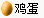
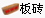
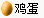
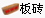

请于2014年10月4日早上10:00（此为截止时间）前跟帖回复（须为全名，默认顺序为冠亚季）你所预测的2014年全国五子棋锦标赛男子、女子组前三名（公开组除外），每猜中一位（按顺序对
应）+1威望，猜中男子、女子冠军各+1威望，男子组全对（按顺序对应）额外+2威望，女子组全对（按顺序对应）额外加1威望。本次竞猜解释权归论坛管理组。
PS：名单和第一轮对阵已经出来，到处搜搜～～
［此帖子已被 无尽 在 2014-10-3 19:38:08 编辑过］
男子组：
冠军：祁观
亚军：龚胜
季军：黄圣明
女子组：
冠军：汪清清
亚军：韩悦
季军：吴志琴
［此帖子已被 伤情路 在 2014-10-3 19:42:23 编辑过］
［ 无尽 于 2014-10-7 10:16:19 时奖励此帖[金币加 100 威望加1］
［ 无尽 于 2014-10-7 10:16:32 时奖励此帖[金币加 100 威望加1］
［ 无尽 于 2014-10-7 10:16:38 时奖励此帖[金币加 100 威望加1］
［ 无尽 于 2014-10-7 10:16:42 时奖励此帖[金币加 100 威望加1］
［ 无尽 于 2014-10-7 10:16:55 时奖励此帖[金币加 100 威望加1］
［ 无尽 于 2014-10-7 10:16:58 时奖励此帖[金币加 100 威望加1］
［ 无尽 于 2014-10-7 10:17:01 时奖励此帖[金币加 100 威望加1］
［ 无尽 于 2014-10-7 10:17:05 时奖励此帖[金币加 100 威望加1］
［ 无尽 于 2014-10-7 10:17:13 时奖励此帖[金币加 100 威望加1］
［ 无尽 于 2014-10-7 10:17:16 时奖励此帖[金币加 100 威望加1］
［ 无尽 于 2014-10-7 13:04:50 时奖励此帖[金币加 100 威望加1］
［ 无尽 于 2014-10-7 10:17:23 时奖励此帖[金币加 100 威望加1］
［ 无尽 于 2014-10-7 10:17:26 时奖励此帖[金币加 100 威望加1］
［ 无尽 于 2014-10-7 10:17:29 时奖励此帖[金币加 100 威望加1］
［ 无尽 于 2014-10-7 10:18:29 时奖励此帖[金币加 100 威望加1］
［ 无尽 于 2014-10-7 10:21:12 时奖励此帖[金币加 100 威望加1］
［ 无尽 于 2014-10-7 10:21:15 时奖励此帖[金币加 100 威望加1］
［ 无尽 于 2014-10-7 10:21:18 时奖励此帖[金币加 100 威望加1］
［ 无尽 于 2014-10-7 10:21:21 时奖励此帖[金币加 100 威望加1］
［ 无尽 于 2014-10-7 10:21:27 时奖励此帖[金币加 100 威望加1］
［ 无尽 于 2014-10-7 10:21:30 时奖励此帖[金币加 100 威望加1］
［ 无尽 于 2014-10-7 10:21:34 时奖励此帖[金币加 100 威望加1］
［ 无尽 于 2014-10-7 10:21:37 时奖励此帖[金币加 100 威望加1］
［ 无尽 于 2014-10-7 10:21:43 时奖励此帖[金币加 100 威望加1］
［ 无尽 于 2014-10-7 10:21:47 时奖励此帖[金币加 100 威望加1］
［ 无尽 于 2014-10-7 10:22:03 时奖励此帖[金币加 100 威望加1］
［ 无尽 于 2014-10-7 10:22:07 时奖励此帖[金币加 100 威望加1］
［ 无尽 于 2014-10-7 10:22:10 时奖励此帖[金币加 100 威望加1］
［ 无尽 于 2014-10-7 10:22:15 时奖励此帖[金币加 100 威望加1］
［ 无尽 于 2014-10-7 10:22:27 时奖励此帖[金币加 100 威望加1］
［ 无尽 于 2014-10-7 10:22:31 时奖励此帖[金币加 100 威望加1］
［ 无尽 于 2014-10-7 10:22:34 时奖励此帖[金币加 100 威望加1］
［ 无尽 于 2014-10-7 10:22:37 时奖励此帖[金币加 100 威望加1］
［ 无尽 于 2014-10-7 10:26:19 时奖励此帖[金币加 100 威望加1］
［ 无尽 于 2014-10-7 10:26:23 时奖励此帖[金币加 100 威望加1］
［ 无尽 于 2014-10-7 10:26:26 时奖励此帖[金币加 100 威望加1］
［ 无尽 于 2014-10-7 10:26:57 时奖励此帖[金币加 100 威望加1］
［ 无尽 于 2014-10-7 10:29:00 时奖励此帖[金币加 100 威望加1］
［ 无尽 于 2014-10-7 10:29:02 时奖励此帖[金币加 100 威望加1］
［ 无尽 于 2014-10-7 10:29:06 时奖励此帖[金币加 100 威望加1］
［ 无尽 于 2014-10-7 10:29:09 时奖励此帖[金币加 100 威望加1］
| |||
［ 无尽 于 2014-10-7 10:29:16 时奖励此帖[金币加 100 威望加1］
［ 无尽 于 2014-10-7 10:29:19 时奖励此帖[金币加 100 威望加1］
［ 无尽 于 2014-10-7 10:29:22 时奖励此帖[金币加 100 威望加1］
［ 无尽 于 2014-10-7 10:29:26 时奖励此帖[金币加 100 威望加1］
［ 无尽 于 2014-10-7 10:29:33 时奖励此帖[金币加 100 威望加1］
［ 无尽 于 2014-10-7 10:29:45 时奖励此帖[金币加 100 威望加1］
［ 无尽 于 2014-10-7 10:29:48 时奖励此帖[金币加 100 威望加1］
［ 无尽 于 2014-10-7 10:29:52 时奖励此帖[金币加 100 威望加1］
男子组：
冠军：梅凡
亚军：祁观
季军：江齐文
女子组：
冠军：汪清清
亚军：吴志琴
季军：韩悦
［ 无尽 于 2014-10-7 10:29:57 时奖励此帖[金币加 100 威望加1］
［ 无尽 于 2014-10-7 10:30:00 时奖励此帖[金币加 100 威望加1］
［ 无尽 于 2014-10-7 10:30:04 时奖励此帖[金币加 100 威望加1］
［ 无尽 于 2014-10-7 10:30:11 时奖励此帖[金币加 100 威望加1］
［ 无尽 于 2014-10-7 10:30:15 时奖励此帖[金币加 100 威望加1］
［ 无尽 于 2014-10-7 10:30:21 时奖励此帖[金币加 100 威望加1］
［ 无尽 于 2014-10-7 10:30:26 时奖励此帖[金币加 100 威望加1］
［ 无尽 于 2014-10-7 10:31:00 时奖励此帖[金币加 100 威望加1］
［ 无尽 于 2014-10-7 10:31:14 时奖励此帖[金币加 100 威望加1］
［ 无尽 于 2014-10-7 10:31:17 时奖励此帖[金币加 100 威望加1］
［ 无尽 于 2014-10-7 10:31:21 时奖励此帖[金币加 100 威望加1］
［ 无尽 于 2014-10-7 10:31:24 时奖励此帖[金币加 100 威望加1］
［ 无尽 于 2014-10-7 10:31:45 时奖励此帖[金币加 100 威望加1］
［ 无尽 于 2014-10-7 10:31:48 时奖励此帖[金币加 100 威望加1］
［ 无尽 于 2014-10-7 10:32:02 时奖励此帖[金币加 100 威望加1］
［ 无尽 于 2014-10-7 10:32:05 时奖励此帖[金币加 100 威望加1］
女子：韩月 韩月 韩月
［ 无尽 于 2014-10-7 10:32:19 时奖励此帖[金币加 100 威望加1］
［ 无尽 于 2014-10-7 10:32:22 时奖励此帖[金币加 100 威望加1］
［ 无尽 于 2014-10-7 10:32:25 时奖励此帖[金币加 100 威望加1］
［ 无尽 于 2014-10-7 10:32:29 时奖励此帖[金币加 100 威望加1］
［ 无尽 于 2014-10-7 10:32:36 时奖励此帖[金币加 100 威望加1］
［ 无尽 于 2014-10-7 10:32:40 时奖励此帖[金币加 100 威望加1］
［ 无尽 于 2014-10-7 10:32:43 时奖励此帖[金币加 100 威望加1］
［ 无尽 于 2014-10-7 10:32:46 时奖励此帖[金币加 100 威望加1］
男子组：
冠军：龚胜
亚军：祁观
季军：兰志仁
女子组：
冠军：汪清清
亚军：刘恂
季军：成艳珍
［ 无尽 于 2014-10-7 10:32:55 时奖励此帖[金币加 100 威望加1］
［ 无尽 于 2014-10-7 10:32:57 时奖励此帖[金币加 100 威望加1］
男子组：
女子组：
［ 无尽 于 2014-10-7 10:33:05 时奖励此帖[金币加 100 威望加1］
［ 无尽 于 2014-10-7 10:33:08 时奖励此帖[金币加 100 威望加1］
［ 无尽 于 2014-10-7 10:33:14 时奖励此帖[金币加 100 威望加1］
［ 无尽 于 2014-10-7 10:33:18 时奖励此帖[金币加 100 威望加1］
男子组：
冠军：祁观
亚军：兰志仁
季军：龚胜
女子组：
冠军：汪清清
亚军：韩悦
季军：李小青
［ 无尽 于 2014-10-7 10:34:37 时奖励此帖[金币加 100 威望加1］
［ 无尽 于 2014-10-7 10:34:40 时奖励此帖[金币加 100 威望加1］
［ 无尽 于 2014-10-7 10:34:44 时奖励此帖[金币加 100 威望加1］
［ 无尽 于 2014-10-7 10:34:50 时奖励此帖[金币加 100 威望加1］
［ 无尽 于 2014-10-7 10:34:54 时奖励此帖[金币加 100 威望加1］
［ 无尽 于 2014-10-7 10:34:57 时奖励此帖[金币加 100 威望加1］
［ 无尽 于 2014-10-7 10:35:04 时奖励此帖[金币加 100 威望加1］
［ 无尽 于 2014-10-7 10:35:11 时奖励此帖[金币加 100 威望加1］
［ 无尽 于 2014-10-7 10:35:14 时奖励此帖[金币加 100 威望加1］
［ 无尽 于 2014-10-7 10:35:18 时奖励此帖[金币加 100 威望加1］
［ 无尽 于 2014-10-7 10:35:27 时奖励此帖[金币加 100 威望加1］
［ 无尽 于 2014-10-7 10:35:30 时奖励此帖[金币加 100 威望加1］
［ 无尽 于 2014-10-7 10:35:33 时奖励此帖[金币加 100 威望加1］
［ 无尽 于 2014-10-7 10:35:36 时奖励此帖[金币加 100 威望加1］
［ 无尽 于 2014-10-7 13:06:16 时奖励此帖[金币加 100 威望加1］
［ 无尽 于 2014-10-7 13:06:19 时奖励此帖[金币加 100 威望加1］
［ 无尽 于 2014-10-7 13:06:22 时奖励此帖[金币加 100 威望加1］
［ 无尽 于 2014-10-7 13:06:26 时奖励此帖[金币加 100 威望加1］
［ 无尽 于 2014-10-7 13:06:35 时奖励此帖[金币加 100 威望加1］
［ 无尽 于 2014-10-7 13:06:38 时奖励此帖[金币加 100 威望加1］
［ 无尽 于 2014-10-7 13:06:41 时奖励此帖[金币加 100 威望加1］
［ 无尽 于 2014-10-7 13:06:45 时奖励此帖[金币加 100 威望加1］
［ 无尽 于 2014-10-7 13:06:52 时奖励此帖[金币加 100 威望加1］
［ 无尽 于 2014-10-7 13:06:55 时奖励此帖[金币加 100 威望加1］
［ 无尽 于 2014-10-7 13:06:58 时奖励此帖[金币加 100 威望加1］
［ 无尽 于 2014-10-7 13:07:02 时奖励此帖[金币加 100 威望加1］
［ 无尽 于 2014-10-7 13:07:24 时奖励此帖[金币加 100 威望加1］
［ 无尽 于 2014-10-7 13:07:28 时奖励此帖[金币加 100 威望加1］
［ 无尽 于 2014-10-7 13:07:31 时奖励此帖[金币加 100 威望加1］
［ 无尽 于 2014-10-7 13:07:35 时奖励此帖[金币加 100 威望加1］
［ 无尽 于 2014-10-7 13:07:42 时奖励此帖[金币加 100 威望加1］
［ 无尽 于 2014-10-7 13:07:45 时奖励此帖[金币加 100 威望加1］
［ 无尽 于 2014-10-7 13:07:48 时奖励此帖[金币加 100 威望加1］
［ 无尽 于 2014-10-7 13:07:52 时奖励此帖[金币加 100 威望加1］
［ 无尽 于 2014-10-7 13:07:56 时奖励此帖[金币加 100 威望加1］
［ 无尽 于 2014-10-7 13:07:59 时奖励此帖[金币加 100 威望加1］
［ 无尽 于 2014-10-7 13:08:49 时奖励此帖[金币加 100 威望加1］
［ 无尽 于 2014-10-7 13:08:52 时奖励此帖[金币加 100 威望加1］
［ 无尽 于 2014-10-7 13:08:55 时奖励此帖[金币加 100 威望加1］
［ 无尽 于 2014-10-7 13:08:59 时奖励此帖[金币加 100 威望加1］
［ 无尽 于 2014-10-7 13:09:15 时奖励此帖[金币加 100 威望加1］
［ 无尽 于 2014-10-7 13:09:18 时奖励此帖[金币加 100 威望加1］
［ 无尽 于 2014-10-7 13:09:33 时奖励此帖[金币加 100 威望加1］
［ 无尽 于 2014-10-7 13:09:37 时奖励此帖[金币加 100 威望加1］
［ 无尽 于 2014-10-7 13:09:40 时奖励此帖[金币加 100 威望加1］
［ 无尽 于 2014-10-7 13:09:44 时奖励此帖[金币加 100 威望加1］
［ 无尽 于 2014-10-7 13:09:52 时奖励此帖[金币加 100 威望加1］
［ 无尽 于 2014-10-7 13:09:55 时奖励此帖[金币加 100 威望加1］
［ 无尽 于 2014-10-7 13:10:07 时奖励此帖[金币加 100 威望加1］
［ 无尽 于 2014-10-7 13:10:10 时奖励此帖[金币加 100 威望加1］
［ 无尽 于 2014-10-7 13:10:18 时奖励此帖[金币加 100 威望加1］
［ 无尽 于 2014-10-7 13:10:22 时奖励此帖[金币加 100 威望加1］
［ 无尽 于 2014-10-7 13:10:25 时奖励此帖[金币加 100 威望加1］
［ 无尽 于 2014-10-7 13:10:29 时奖励此帖[金币加 100 威望加1］
［ 无尽 于 2014-10-7 13:10:37 时奖励此帖[金币加 100 威望加1］
［ 无尽 于 2014-10-7 13:10:40 时奖励此帖[金币加 100 威望加1］
男子组：
冠军：祁观
亚军：龚胜
季军：黄圣明
女子组：
冠军：汪清清
亚军：韩悦
季军：吴志琴
［ 无尽 于 2014-10-7 13:10:57 时奖励此帖[金币加 100 威望加1］
［ 无尽 于 2014-10-7 13:11:00 时奖励此帖[金币加 100 威望加1］
［ 无尽 于 2014-10-7 13:11:04 时奖励此帖[金币加 100 威望加1］
［ 无尽 于 2014-10-7 13:11:07 时奖励此帖[金币加 100 威望加1］
<A style="CURSOR: hand" onclick="/open('Friend.asp?menu=Post&incept=战神巴蒂','','width=320,height=170')">   | No.3 | |
男子：祁观梅凡芦海 | ||
［ 无尽 于 2014-10-7 13:11:13 时奖励此帖[金币加 100 威望加1］
［ 无尽 于 2014-10-7 13:11:16 时奖励此帖[金币加 100 威望加1］
［ 无尽 于 2014-10-7 13:11:19 时奖励此帖[金币加 100 威望加1］
［ 无尽 于 2014-10-7 13:11:23 时奖励此帖[金币加 100 威望加1］
［ 无尽 于 2014-10-7 13:12:24 时奖励此帖[金币加 100 威望加1］
［ 无尽 于 2014-10-7 13:12:59 时奖励此帖[金币加 100 威望加1］
男子组：
冠军：祁观
亚军：龚胜
季军：黄圣明
女子组：
冠军：汪清清
亚军：韩悦
季军：董晨瑛
［ 无尽 于 2014-10-7 13:11:31 时奖励此帖[金币加 100 威望加1］
［ 无尽 于 2014-10-7 13:11:35 时奖励此帖[金币加 100 威望加1］
［ 无尽 于 2014-10-7 13:11:38 时奖励此帖[金币加 100 威望加1］
［ 无尽 于 2014-10-7 13:11:41 时奖励此帖[金币加 100 威望加1］
男子组：
冠军：祁观
亚军：龚胜
季军：黄圣明
女子组：
冠军：汪清清
亚军：韩悦
季军：吴志琴
［ 无尽 于 2014-10-7 13:11:46 时奖励此帖[金币加 100 威望加1］
［ 无尽 于 2014-10-7 13:11:51 时奖励此帖[金币加 100 威望加1］
［ 无尽 于 2014-10-7 13:11:54 时奖励此帖[金币加 100 威望加1］
［ 无尽 于 2014-10-7 13:11:58 时奖励此帖[金币加 100 威望加1］
男子组：
冠军：祁观
亚军：陈靖
季军：龚胜
女子组：
冠军：汪清清
亚军：韩悦
季军：吴志琴
［ 无尽 于 2014-10-7 13:13:57 时奖励此帖[金币加 100 威望加1］
［ 无尽 于 2014-10-7 13:14:29 时奖励此帖[金币加 100 威望加1］
［ 无尽 于 2014-10-7 13:14:31 时奖励此帖[金币加 100 威望加1］
［ 无尽 于 2014-10-7 13:14:44 时奖励此帖[金币加 100 威望加1］
| No.2 | |
| Re:2014年全国五子棋锦标赛竞猜 男子组： 冠军：祁观 亚军：陈靖 季军：梅凡 女子组： 冠军：汪清清 亚军：吴志琴 季军：于亚军 | ||
［ 无尽 于 2014-10-7 13:14:51 时奖励此帖[金币加 100 威望加1］
［ 无尽 于 2014-10-7 13:14:54 时奖励此帖[金币加 100 威望加1］
［ 无尽 于 2014-10-7 13:14:59 时奖励此帖[金币加 100 威望加1］
［ 无尽 于 2014-10-7 13:15:34 时奖励此帖[金币加 100 威望加1］
［ 无尽 于 2014-10-7 13:15:38 时奖励此帖[金币加 100 威望加1］
［此帖子已被 无尽 在 2014-10-7 13:17:09 编辑过］
男子组：
冠军：祁观
亚军：陈靖
季军：梅凡
女子组：
冠军：汪清清
亚军：吴志琴
季军：于亚军
［ 无尽 于 2014-10-7 13:15:48 时奖励此帖[金币加 100 威望加1］
［ 无尽 于 2014-10-7 13:15:50 时奖励此帖[金币加 100 威望加1］
［ 无尽 于 2014-10-7 13:15:54 时奖励此帖[金币加 100 威望加1］
［ 无尽 于 2014-10-7 13:15:58 时奖励此帖[金币加 100 威望加1］
［ 无尽 于 2014-10-7 13:16:02 时奖励此帖[金币加 100 威望加1］
男子组：
冠军：祁观
亚军：龚胜
季军：陈靖
女子组：
冠军：汪清清
亚军：吴志琴
季军：韩悦
［此帖子已被 无尽 在 2014-10-7 13:18:11 编辑过］
男子组：
冠军：祁观
亚军：龚胜
季军：陈靖
女子组：
冠军：汪清清
亚军：吴志琴
季军：刘询
男子组：
冠军：祈观
亚军：龚胜
季军：陈靖
女子组：
冠军：汪清清
亚军：吴志琴
季军：韩悦
男子冠军：祁观